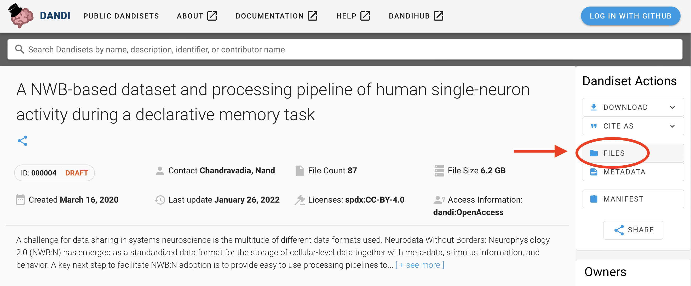
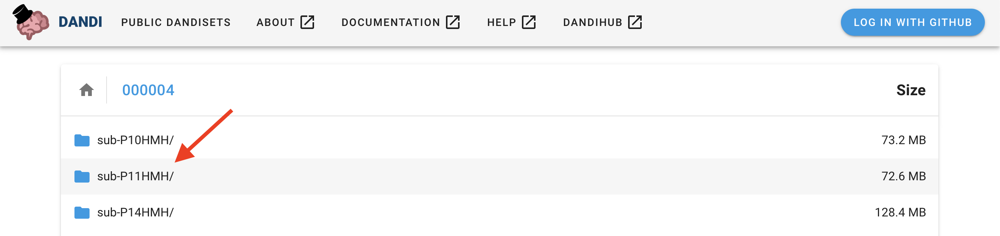
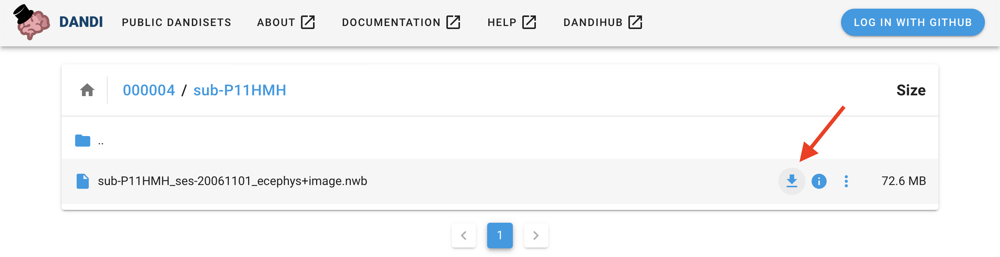
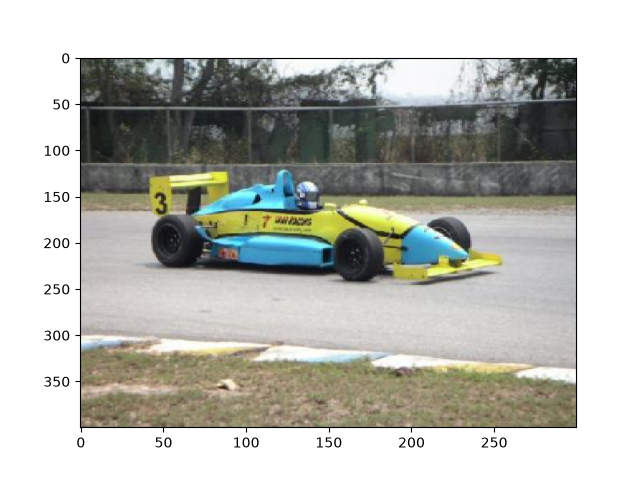
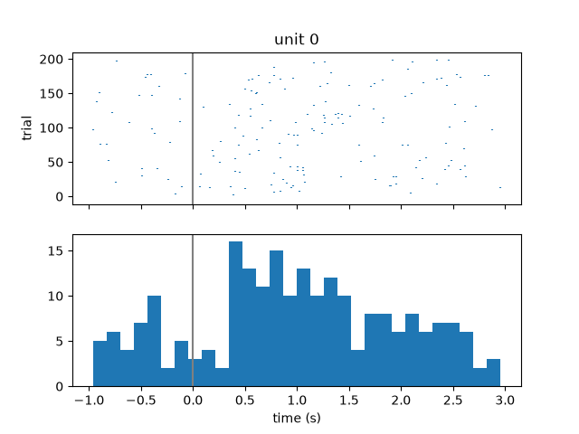
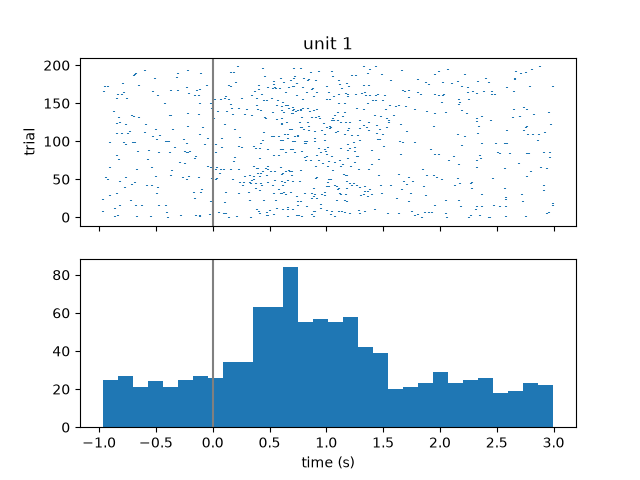
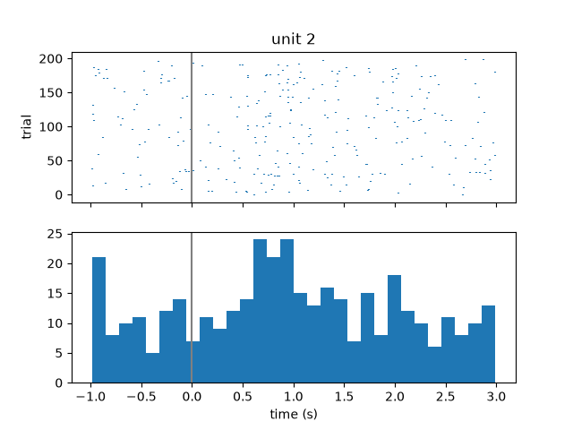
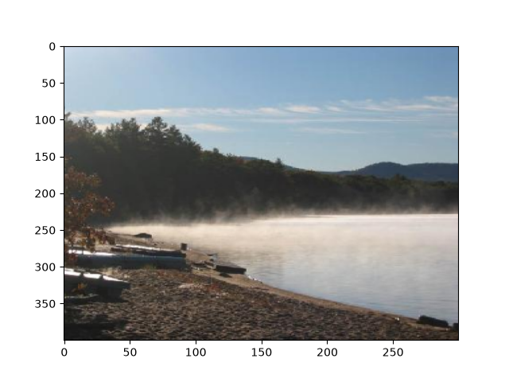
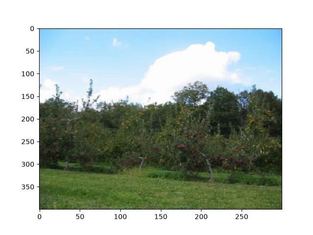
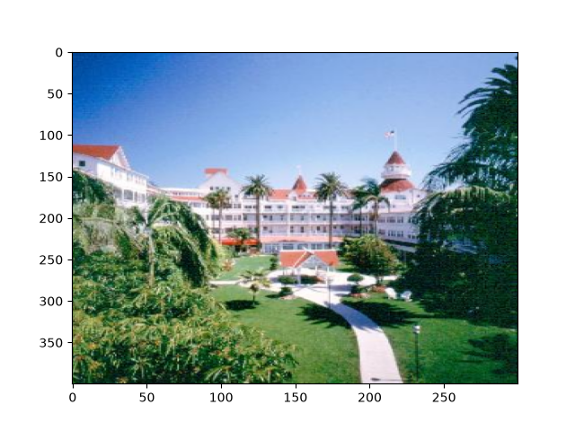

Note
Go to the end to download the full example code.
Reading and Exploring an NWB File
This tutorial will demonstrate how to read, explore, and do basic visualizations with an NWB File using different tools.
An NWBFile represents a single session of an experiment.
It contains all the data of that session and the metadata required to understand the data.
We will demonstrate how to use the DANDI neurophysiology data archive to access the data in two different ways: (1) by downloading it to your computer and (2) streaming it.
We will briefly show tools for exploring NWB Files interactively and refer the reader to the NWB Overview documentation for more details about the available tools.
See also
You can learn more about the NWBFile format in the NWB File Basics tutorial.
The following examples will reference variables that may not be defined within the block they are used in. For clarity, we define them here:
import matplotlib.pyplot as plt
import numpy as np
We will access NWB data on the DANDI Archive, and demonstrate reading one session of an experiment by Chandravadia et al. (2020). In this study, the authors recorded single neuron activity from the medial temporal lobes of human subjects while they performed a recognition memory task.
Download the data
First, we will demonstrate how to download an NWB data file from DANDI to your machine.
Download using the DANDI Web UI
You can download files directly from the DANDI website.
Go to the DANDI archive and open this dataset
List the files in this dataset by clicking the “Files” button in Dandiset Actions (top right column of the page).
{kind=link}

Choose the folder “sub-P11MHM” by clicking on its name.
{kind=link}

4. Download the NWB data file “sub-P11HMH_ses-20061101_ecephys+image.nwb” to your computer by clicking on the download symbol.
{kind=link}

Downloading data programmatically
Alternatively, you can download data using the dandi Python module.
PATH SIZE DONE DONE% CHECKSUM STATUS MESSAGE
sub-P11HMH_ses-20061101_ecephys+image.nwb 72.6 MB 72.6 MB 100% ok done
Summary: 72.6 MB 72.6 MB 1 done
100.00%
See also
Learn about all the different ways you can download data from the DANDI Archive here
See also
Streaming data
Instead of downloading data, another approach is to stream data directly from an archive. Streaming data allows you to download only the data you want from a file, so it can be a much better approach when the desired data files contain a lot of data you don’t care about. There are several approaches to streaming NWB files, outlined in Streaming NWB files.
Opening an NWB file with NWBHDF5IO
Reading and writing NWB data is carried out using the NWBHDF5IO class.
NWBHDF5IO reads NWB data that is in the HDF5
storage format, a popular, hierarchical format for storing large-scale scientific data.
The first argument to the constructor of NWBHDF5IO is the file_path. Use the read method to
read the data into a NWBFile object.
For more advanced use cases, the :py:class:~pynwb.NWBHDF5IO class provides additional functionality. Below, we demonstrate how :py:class:~pynwb.NWBHDF5IO can be used as a context manager to read data from an NWB file in a more controlled manner:
The advantage of using a context manager is that the file is closed automatically when the context finishes
successfully or if there is an error. Be aware that if you use this method, closing the context (unindenting the code)
will automatically close the NWBHDF5IO object and the corresponding h5py File object. The data not
already read from the NWB file will then be inaccessible, so any code that reads data must be placed within the
context.
Access stimulus data
Data representing stimuli that were presented to the experimental subject are stored in
stimulus within the NWBFile object.
nwbfile.stimulus
NWBFile.stimulus is a dictionary that can contain PyNWB objects representing
different types of data, such as images (grayscale, RGB) or time series of images.
In this file, NWBFile.stimulus contains a single key “StimulusPresentation” with an
OpticalSeries object representing what images were shown to the subject and at what times.
nwbfile.stimulus["StimulusPresentation"]
Lazy loading of datasets
Data arrays are read passively from the NWB file.
Accessing the data attribute of the OpticalSeries object
does not read the data values, but presents an h5py.Dataset object that can be indexed to read data.
You can use the [:] operator to read the entire data array into memory.
stimulus_presentation = nwbfile.stimulus["StimulusPresentation"]
all_stimulus_data = stimulus_presentation.data[:]
Images may be 3D or 4D (grayscale or RGB), where the first dimension must be time (frame). The second and third dimensions represent x and y. The fourth dimension represents the RGB value (length of 3) for color images.
stimulus_presentation.data.shape
(200, 400, 300, 3)
This OpticalSeries data contains 200 images of size 400x300 pixels with three channels
(red, green, and blue).
Slicing datasets
It is often preferable to read only a portion of the data.
To do this, index or slice into the data attribute just like if you were
indexing or slicing a numpy array.
frame_index = 31
image = stimulus_presentation.data[frame_index]
# Reverse the last dimension because the data were stored in BGR instead of RGB
image = image[..., ::-1]
plt.imshow(image, aspect="auto")

<matplotlib.image.AxesImage object at 0x792d18d55ac0>
Access single unit data
Data and metadata about sorted single units are stored in Units
object. It stores metadata about each single unit in a tabular form, where each row represents
a unit with spike times and additional metadata.
See also
You can learn more about units in the Extracellular Electrophysiology Data tutorial.
units = nwbfile.units
We can view the single unit data as a DataFrame.
To access the spike times of the first single unit, index units with the column
name “spike_times” and then the row index, 0. All times in NWB are stored in seconds
relative to the session start time.
units["spike_times"][0]
array([5932.811644, 6081.077044, 6091.982364, 6093.127644, 6095.068204,
6097.438244, 6116.694804, 6129.827604, 6134.825004, 6142.583924,
6148.385364, 6149.993804, 6150.397044, 6155.302324, 6160.684004,
6164.865244, 6165.967804, 6166.810564, 6169.882924, 6173.715884,
6178.882244, 6179.994244, 6190.154284, 6197.473884, 6201.784204,
6204.267124, 6205.795604, 6209.183204, 6214.079844, 6216.054844,
6216.622204, 6220.794284, 6223.041564, 6227.578284, 6241.826004,
6243.708444, 6248.290124, 6249.827244, 6251.844244, 6252.321324,
6255.445964, 6255.450764, 6256.071404, 6262.130524, 6263.449684,
6271.980484, 6273.345364, 6274.503964, 6278.871164, 6282.031884,
6293.636604, 6294.736004, 6298.655764, 6309.551284, 6316.313844,
6317.823484, 6321.783684, 6324.364244, 6326.245564, 6327.291284,
6327.506404, 6343.618684, 6348.224124, 6356.779644, 6811.910324,
6831.062924, 6835.395244, 6837.133324, 6842.687684, 6844.716764,
6852.494204, 6852.676004, 6861.838364, 6867.722964, 6868.506684,
6870.520564, 6870.696084, 6870.992244, 6874.586124, 6875.521284,
6875.526764, 6880.573684, 6884.808964, 6885.198524, 6887.827804,
6891.872644, 6893.842164, 6895.660884, 6905.411844, 6905.945964,
6908.227684, 6909.327524, 6910.216444, 6913.853124, 6920.003524,
6920.500964, 6923.282284, 6923.790284, 6923.815324, 6924.482084,
6929.252164, 6933.061564, 6934.280164, 6937.846484, 6940.652804,
6943.622284, 6950.313084, 6950.363204, 6954.785244, 6954.933924,
6959.337924, 6962.573244, 6963.663164, 6966.080444, 6966.146044,
6970.827564, 6970.979524, 6973.283724, 6987.875764, 6992.403004,
6993.954124, 6996.946764, 6997.249284, 6999.875764, 7004.600924,
7008.001244, 7009.398204, 7011.068564, 7017.730804, 7019.278004,
7024.695844, 7027.928084, 7041.186004, 7043.951164, 7044.394164,
7052.429444, 7053.377284, 7054.072164, 7072.272564, 7072.836364,
7073.433204, 7073.844604, 7073.901084, 7079.004124, 7080.598844,
7083.965564, 7084.016084, 7086.730804, 7090.336364, 7101.254244,
7114.549764, 7116.230604, 7119.653564, 7119.685684, 7122.680484,
7127.814804, 7129.421884, 7141.764244, 7143.759004, 7147.602804,
7149.140324, 7151.777524, 7157.066044, 7157.118404, 7158.532644,
7334.693084, 7335.015444, 7336.416404, 7340.052364, 7345.172164,
7363.078724, 7365.825364, 7375.025684, 7381.381804, 7382.057444,
7382.416484, 7382.997684, 7383.204804, 7384.305124, 7386.312724,
7386.694364, 7389.302964, 7396.554924, 7397.925444, 7402.733404,
7406.523084, 7407.317684, 7409.281964, 7411.153164, 7412.606124,
7413.468804, 7420.820204, 7424.900604, 7425.235964, 7425.489244,
7426.975844, 7431.840764, 7434.457964, 7436.035524, 7436.086484,
7438.281564, 7444.681404, 7446.768444, 7452.015684, 7455.865644,
7459.695124, 7469.229324, 7469.447164, 7470.021844, 7475.205524,
7480.513124, 7485.459604, 7487.198044, 7491.487884, 7491.529244,
7503.131844, 7509.601444, 7518.232884, 7520.176244, 7522.629044,
7526.786084, 7527.225084, 7527.668244, 7531.142964, 7539.957964,
7541.722804, 7543.518964, 7547.003564, 7549.018484, 7549.069804,
7550.374044, 7551.872924, 7553.427244, 7563.422044, 7566.144044,
7567.238124, 7568.862244, 7569.073564, 7575.387404, 7583.933364,
7584.624484, 7594.007284, 7594.054964, 7595.263164, 7596.982804,
7602.387084, 7605.198924, 7605.552324, 7606.064884, 7606.100604,
7606.471644, 7608.873244, 7611.354804, 7611.386804, 7615.139004,
7620.247884, 7621.979604, 7629.935284, 7632.076484, 7635.188044,
7635.195444, 7650.052684, 7954.638503, 7954.781023, 7955.781503,
7957.472423, 8737.861503, 8738.114583, 8745.994143, 8751.983023,
8752.956743, 8759.633223, 8763.513143, 8767.843183, 8769.437743,
8769.722423, 8770.277983, 8771.478103, 8774.213063, 8775.969463,
8788.423623, 8788.552143, 8788.986663, 8794.429063, 8796.650303,
8797.612063, 8799.980783, 8800.796863, 8803.618063, 8803.886663,
8803.947783, 8806.479783, 8809.613743, 8811.981903, 8821.248783,
8821.956583, 8823.353583, 8832.448903, 8833.632423, 8835.896503,
8846.307303, 8853.548143, 8854.569343, 8855.609823, 8858.938063,
8859.377623, 8861.211783, 8861.520783, 8863.375583, 8874.494623,
8875.107303, 8877.309463, 8890.033823, 8893.205503, 8893.727743,
8902.555583, 8908.088743, 8909.480663, 8909.599623, 8917.999063,
8918.456263, 8922.668823, 8924.168263, 8925.681703, 8934.790023,
8941.341583, 8941.729463, 8946.041383, 8953.742663, 8955.295183,
8955.777943, 8958.401863, 8959.338423, 8968.056023, 8968.512463,
8970.277183, 8971.752023, 8974.239503, 8983.962903, 8985.244303,
8988.592263, 8991.135303, 8991.409423, 8992.908263, 8995.101423,
8997.635343, 8999.058143, 9002.087743, 9003.022143, 9003.163143,
9003.484943, 9003.741023, 9008.767263, 9008.915183, 9010.942143,
9010.976183, 9013.915423, 9015.557943, 9018.411263, 9023.921183,
9030.917263, 9043.395623, 9049.802143, 9053.791543, 9065.276343,
9074.427783, 9077.736063, 9081.744663, 9082.581383, 9088.609223,
9089.031503, 9089.147943, 9098.463543])
Visualize spiking activity relative to stimulus onset
We can look at when these single units spike relative to when image stimuli were presented to the subject. We will iterate over the first 3 units and get their spike times. Then for each unit, we will iterate over each stimulus onset time and compute the spike times relative to stimulus onset. Finally, we will create a raster plot and histogram of these aligned spike times.
before = 1.0 # in seconds
after = 3.0
# Get the stimulus times for all stimuli
# get_timestamps() works whether the time is stored as an array of timestamps or as
# starting time and sampling rate.
stim_on_times = stimulus_presentation.get_timestamps()
for unit in range(3):
unit_spike_times = nwbfile.units["spike_times"][unit]
trial_spikes = []
for time in stim_on_times:
# Compute spike times relative to stimulus onset
aligned_spikes = unit_spike_times - time
# Keep only spike times in a given time window around the stimulus onset
aligned_spikes = aligned_spikes[
(-before < aligned_spikes) & (aligned_spikes < after)
]
trial_spikes.append(aligned_spikes)
fig, axs = plt.subplots(2, 1, sharex="all")
plt.xlabel("time (s)")
axs[0].eventplot(trial_spikes)
axs[0].set_ylabel("trial")
axs[0].set_title("unit {}".format(unit))
axs[0].axvline(0, color=[0.5, 0.5, 0.5])
axs[1].hist(np.hstack(trial_spikes), 30)
axs[1].axvline(0, color=[0.5, 0.5, 0.5])



Access Trials
Trials are stored as TimeIntervals object which is a subclass
of DynamicTable. DynamicTable objects are used to store
metadata about each trial in a tabular form, where each row represents a trial and has a start time, stop time,
and additional metadata.
See also
You can learn more about trials in the Annotating Time Intervals tutorial.
Similarly to Units, we can view trials as a pandas.DataFrame.
trials_df = nwbfile.trials.to_dataframe()
trials_df.head()
The stimulus can be mapped one-to-one to each row (trial) of
trials based on the stim_on_time column.
assert np.all(stimulus_presentation.timestamps[:] == trials_df.stim_on_time[:])
Visualize the first 3 images that were categorized as landscapes in the session:
stim_on_times_landscapes = trials_df[
trials_df.category_name == "landscapes"
].stim_on_time
for time in stim_on_times_landscapes.iloc[:3]:
img = np.squeeze(
stimulus_presentation.data[
np.where(stimulus_presentation.timestamps[:] == time)
]
)
# Reverse the last dimension because the data were stored in BGR instead of RGB
img = img[..., ::-1]
plt.figure()
plt.imshow(img, aspect="auto")



Exploring the NWB file
So far we have explored the NWB file by printing the NWBFile
object and accessing its attributes, but it may be useful to explore the data in a
more interactive, visual way. See Exploring NWB Files for an updated list of programs for
exploring NWB files.
Close the open NWB file
It is good practice, especially on Windows, to close any files that you have opened.
nwbfile.get_read_io().close()